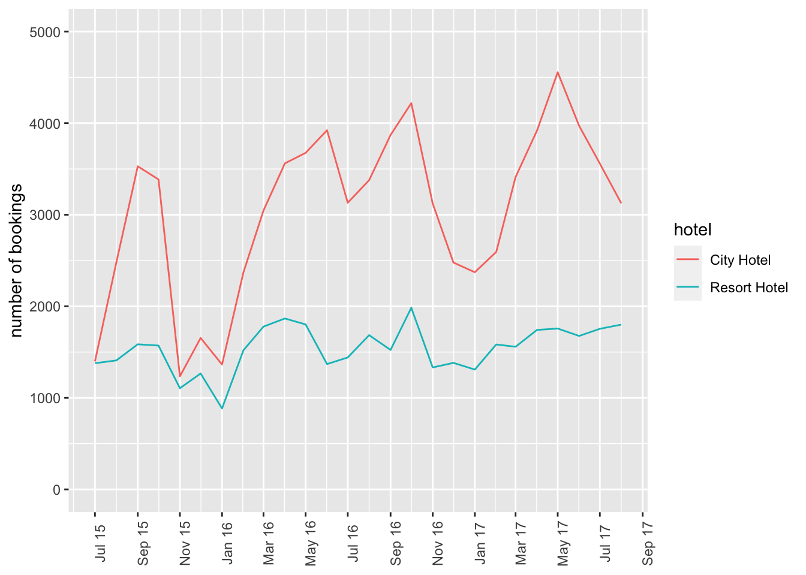
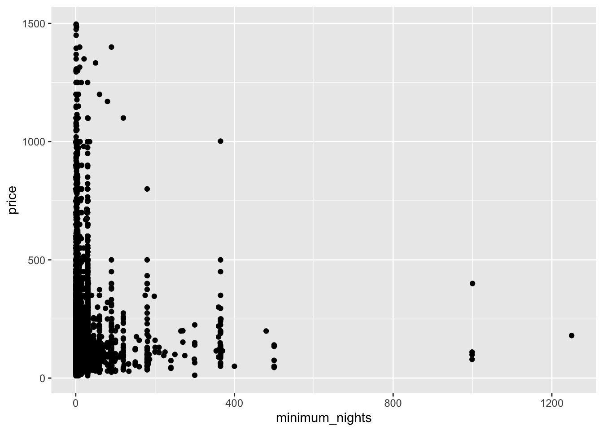
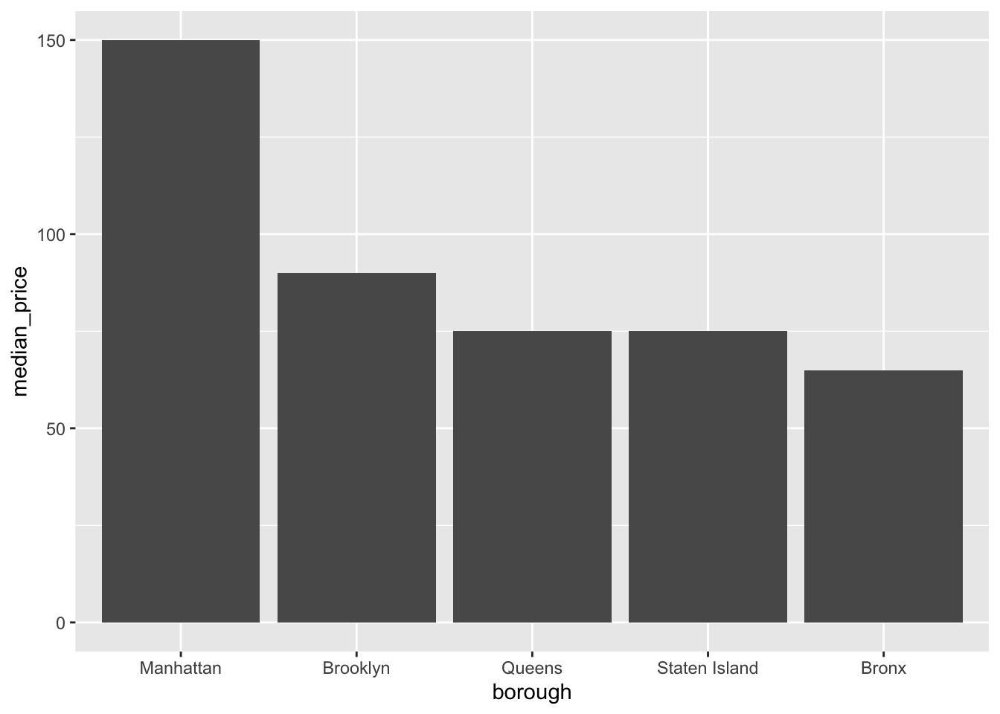

library(tidyverse)
library(ggplot2)
library(readxl)
library(lubridate)
library(here)
knitr::opts_chunk$set(echo = TRUE, warning=FALSE, message=FALSE)Challenge Overview
Today’s challenge is to:
- read in a data set, and describe the data set using both words and any supporting information (e.g., tables, etc)
- tidy data (as needed, including sanity checks)
- mutate variables as needed (including sanity checks)
- Recreate at least two graphs from previous exercises, but introduce at least one additional dimension that you omitted before using ggplot functionality (color, shape, line, facet, etc) The goal is not to create unneeded chart ink (Tufte), but to concisely capture variation in additional dimensions that were collapsed in your earlier 2 or 3 dimensional graphs.
- Explain why you choose the specific graph type
- If you haven’t tried in previous weeks, work this week to make your graphs “publication” ready with titles, captions, and pretty axis labels and other viewer-friendly features
R Graph Gallery is a good starting point for thinking about what information is conveyed in standard graph types, and includes example R code. And anyone not familiar with Edward Tufte should check out his fantastic books and courses on data visualizaton.
(be sure to only include the category tags for the data you use!)
Hotel Bookings
Read in and clean the data
bookings_orig<- here("posts","_data","hotel_bookings.csv") %>%
read_csv()
select(bookings_orig, starts_with("arrival"))# A tibble: 119,390 × 4
arrival_date_year arrival_date_month arrival_date_week_number
<dbl> <chr> <dbl>
1 2015 July 27
2 2015 July 27
3 2015 July 27
4 2015 July 27
5 2015 July 27
6 2015 July 27
7 2015 July 27
8 2015 July 27
9 2015 July 27
10 2015 July 27
# ℹ 119,380 more rows
# ℹ 1 more variable: arrival_date_day_of_month <dbl>bookings<-bookings_orig%>%
mutate(date_arrival = str_c(arrival_date_day_of_month,
arrival_date_month,
arrival_date_year, sep="/"),
date_arrival = dmy(date_arrival))%>%
select(-starts_with("arrival"))
bookings %>%
select(date_arrival)# A tibble: 119,390 × 1
date_arrival
<date>
1 2015-07-01
2 2015-07-01
3 2015-07-01
4 2015-07-01
5 2015-07-01
6 2015-07-01
7 2015-07-01
8 2015-07-01
9 2015-07-01
10 2015-07-01
# ℹ 119,380 more rowsVisualization with multiple dimensions
Previously, we viusalized the variation in number of bookings across time, split by the type of hotel (City vs. Resort).
bookings_month_hotel_n <- bookings %>%
mutate(month=floor_date(date_arrival,unit="month")) %>%
group_by(month, hotel) %>%
summarise(n=n()) %>%
ungroup()
bookings_month_hotel_n# A tibble: 52 × 3
month hotel n
<date> <chr> <int>
1 2015-07-01 City Hotel 1398
2 2015-07-01 Resort Hotel 1378
3 2015-08-01 City Hotel 2480
4 2015-08-01 Resort Hotel 1409
5 2015-09-01 City Hotel 3529
6 2015-09-01 Resort Hotel 1585
7 2015-10-01 City Hotel 3386
8 2015-10-01 Resort Hotel 1571
9 2015-11-01 City Hotel 1235
10 2015-11-01 Resort Hotel 1105
# ℹ 42 more rowsbookings_month_hotel_n %>%
ggplot(aes(month,n,col=hotel))+
geom_line()+
scale_x_date(NULL, date_labels = "%b %y",breaks="2 months")+
scale_y_continuous(limits=c(0,5000))+
labs(x="date",y="number of bookings")+
theme(axis.text.x=element_text(angle=90))
Let’s consider splitting the data based on meal, the type of meal booked.
count(bookings, meal)# A tibble: 5 × 2
meal n
<chr> <int>
1 BB 92310
2 FB 798
3 HB 14463
4 SC 10650
5 Undefined 1169From the data source: Type of meal booked. Categories are presented in standard hospitality meal packages: Undefined/SC – no meal package; BB – Bed & Breakfast; HB – Half board (breakfast and one other meal – usually dinner); FB – Full board (breakfast, lunch and dinner)
Below, we recode meal to make the labels more informative, and then use count() to compute the number of meal bookings for each hotel across time.
bookings_month_hotel_meal_n <- bookings %>%
mutate(month=floor_date(date_arrival,unit="month"),
meal=recode(meal,
BB="Bed and Breakfast",
FB="Full board",
HB="Half board",
SC="Undefined"),
across(c(hotel, meal),as.factor)) %>%
group_by(month,hotel,meal) %>%
summarise(n=n()) %>%
ungroup()
bookings_month_hotel_meal_n# A tibble: 190 × 4
month hotel meal n
<date> <fct> <fct> <int>
1 2015-07-01 City Hotel Bed and Breakfast 1071
2 2015-07-01 City Hotel Half board 312
3 2015-07-01 City Hotel Undefined 15
4 2015-07-01 Resort Hotel Bed and Breakfast 989
5 2015-07-01 Resort Hotel Full board 69
6 2015-07-01 Resort Hotel Half board 320
7 2015-08-01 City Hotel Bed and Breakfast 1881
8 2015-08-01 City Hotel Half board 507
9 2015-08-01 City Hotel Undefined 92
10 2015-08-01 Resort Hotel Bed and Breakfast 968
# ℹ 180 more rowsggplot(bookings_month_hotel_meal_n,aes(month, n, col=meal))+
geom_path()+
facet_wrap(vars(hotel))+
scale_x_date()+
theme(axis.text.x=element_text(angle=90))We can then make the plot more palatable by modifying the theme and color palette. Personally, I like using the ggthemes package to add a custom theme to my plots. I also use the ggsci package to add in a custom color palette based on the tv show Futurama. I also add in some different axis labels.
ggplot(bookings_month_hotel_meal_n,aes(month, n, col=meal))+
geom_line()+
facet_wrap(vars(hotel))+
# ggsci::scale_color_futurama(name="Meal Type")+
see::scale_color_okabeito()+
scale_x_date()+
labs(x="Date",y="Number of Bookings")+
ggthemes::theme_few()+
theme(axis.text.x=element_text(angle=90))Australian Marriage
This is another tabular data source published by the Australian Bureau of Statistics that requires a decent amount of cleaning. In 2017, Australia conducted a postal survey to gauge citizens’ opinions towards same sex marriage: “Should the law be changed to allow same-sex couples to marry?” All Australian citizens are required to vote in elections, so citizens could respond in one of four ways: vote yes, vote no, vote in an unclear way, or fail to vote. (See the “Explanatory Notes” sheet for more details.)
Below we read in the data, using code previously used in the challenge 3 solution. For an explanation of the code, please see that post.
Read Data
vote_orig <- here("posts","_data","australian_marriage_law_postal_survey_2017_-_response_final.xls") %>%
read_excel(sheet="Table 2",
skip=7,
col_names = c("District", "Yes", "del", "No", rep("del", 6), "Illegible", "del", "No Response", rep("del", 3)))%>%
#select(!starts_with("del"))%>%
select(-matches("del")) %>%
drop_na(District)%>%
filter(!str_detect(District, "(Total)"))%>%
filter(!str_starts(District, "\\("))
vote<- vote_orig%>%
mutate(Division = case_when(
str_ends(District, "Divisions") ~ District,
TRUE ~ NA_character_ ))%>%
fill(Division, .direction = "down") %>%
filter(!str_detect(District, "Division|Australia"))Visualization with Multiple Dimensions
vote %>%
mutate(Division=str_remove(Division, " Divisions")) %>%
pivot_longer(cols=Yes:`No Response`,names_to = "Response",values_to = "Count") %>%
filter(Response!="Illegible") %>%
group_by(Division, Response) %>%
summarise(Total_Count=sum(Count)) %>%
ungroup() %>%
mutate(Response=factor(Response,levels=c("Yes","No","No Response"),ordered=T)) %>%
ungroup() %>%
ggplot(aes(Response,Total_Count,fill=reorder(Division,-Total_Count)))+
geom_col(position = "dodge")+
ggsci::scale_fill_nejm(name="Division")+
ggthemes::theme_few()+
labs(y="Count")+
scale_y_continuous(labels=scales::label_number(suffix="K",scale=1e-4))+
theme(axis.text=element_text(angle=90))Air BnB
This is a data set from air bnb. Most of this code is exactly as it was in Challenge 5, with the added work being making the plots more palatable.
airb<-here("posts","_data","AB_NYC_2019.csv") %>%
read_csv()Univariate Visualizations
First, let’s take a look at the distribution of prices.
ggplot(airb,aes(price))+
geom_histogram()Woah, there’s clearly a few outliers here.
range(airb$price)[1] 0 10000airb_filtered <- airb %>%
filter(price>0 & price<1500)
airb_filtered %>%
ggplot(aes(price))+
geom_histogram()+
scale_x_continuous(breaks = seq(0,1500,125))That’s better. The prices look right-skewed.
Bivariate Visualization(s)
Let’s consider the different types of rooms and how they relate to price.
airb_filtered %>%
ggplot(aes(room_type,price))+
geom_boxplot()+
theme(axis.text.x=element_text(angle=90))airb_filtered %>%
ggplot(aes(price))+
geom_histogram()+
facet_wrap(vars(neighbourhood_group),scales="free")airb_filtered %>%
ggplot(aes(room_type,price))+
geom_boxplot()+
facet_wrap(vars(neighbourhood_group),scales="free")+
theme(axis.text.x=element_text(angle=90))
What about the relationship between minimum number of nights and price?
airb_filtered %>%
ggplot(aes(minimum_nights,price))+
geom_point()
There’s probably too much variability/not enough data to draw a clear conclusion.
These AirBnB data are from New York City - so let’s take a look at how the borough relates to price.
We can order the boxplot by descending value of price, using the reorder() function and the FUN argument to specify that we’re using median price.
airb_filtered %>%
ggplot(aes(reorder(neighbourhood_group,-price,FUN = median),price))+
geom_boxplot()Again, a lot of variability and skew in the data, though it makes sense that Manhattan and Brooklyn would cost the most to stay in.
Let’s remake that plot, but make it a little prettier.
price_med <- airb_filtered %>%
group_by(neighbourhood_group) %>%
summarise(median_price=median(price,na.rm=T)) %>%
ungroup()
price_med# A tibble: 5 × 2
neighbourhood_group median_price
<chr> <dbl>
1 Bronx 65
2 Brooklyn 90
3 Manhattan 150
4 Queens 75
5 Staten Island 75airb_filtered %>%
ggplot(aes(reorder(neighbourhood_group,-price,FUN = median),price))+
geom_boxplot(alpha=.6)+
scale_y_continuous(labels=scales::label_dollar())+
labs(x="Borough",
y="Price")+
ggthemes::theme_few()Let’s compute some summary statistics and plot them. We’ll compute the median (due to the skew in the data) and make bar graphs. Of course, the boxplot computes the median too, but it will be a bit easier to see when we take out the individual outliers.
airb_filtered %>%
rename(borough=neighbourhood_group) %>%
group_by(borough) %>%
summarise(median_price=median(price)) %>%
ungroup() %>%
ggplot(aes(reorder(borough,-median_price), median_price))+
geom_col()+
labs(x="borough")
That’s better. Manhattan is a lot more expensive than the other boroughs - about double that of the Bronx!
airb_filtered %>%
rename(borough=neighbourhood_group) %>%
count(room_type,borough) %>%
group_by(borough) %>%
mutate(perc=(n/sum(n))*100) %>%
arrange(borough) %>%
ggplot(aes(room_type,perc))+
geom_col()+
ggthemes::theme_few()+
facet_wrap(vars(borough),scales="free_x")+
labs(x="Room Type",y="Percent")+
theme(axis.text.x=element_text(angle=90))Eggs
eggs <- read_csv(here("posts","_data","eggs_tidy.csv"))eggs_clean <- eggs %>%
pivot_longer(cols=3:6,
values_to = "price") %>%
mutate(name=str_replace(name,"extra_large","extra large"),
name=str_replace(name,"half_dozen","half dozen")) %>%
separate(name,into=c("size","amount"),sep="_") %>%
mutate(date = str_c(month, year, sep=" "),
date = my(date))ggplot(eggs_clean,aes(date,price,col=amount))+
geom_point(alpha=.5)+
scale_x_date()+
scale_y_continuous(labels=scales::label_dollar(),limits=c(0,300))+
facet_wrap(vars(size))+
ggsci::scale_color_d3()+
labs(x="Date",y="Avg. Price Per Carton")+
ggthemes::theme_few()+
theme(axis.text.x=element_text(angle=90))